To assist in understanding how the modifications are made, it is convenient at this time to write the occupied LMO as:
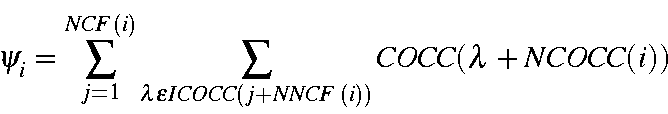
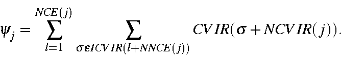
Then the partial sum, F'(j), can be represented as:
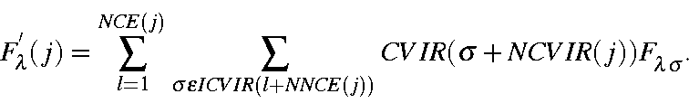
The number of terms in this sum is already much smaller than in conventional matrix annihilation in that the number of atoms represented in each LMO, NCE(j), is much less than the total number of atoms.
Because all Fock matrix elements connecting atoms which are separated by more than CUTOF2 are automatically zero, only those terms which refer to atoms separated by less that CUTOF2 need be evaluated.
All LMOs consist of a central part consisting of one to three atoms, which accounts for almost all of the wavefunction. In the regions of an LMO far away from the center, the contribution of any atom to the wavefunction becomes very small. If the Fock matrix elements connecting this distant atom to any other atom is also very small, then quantities which depend of both of these terms becomes quite negligible. To test whether this condition exists, two scalar quantities need to be calculated. The first is the contribution of each atom to the LMO:
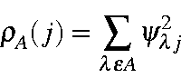
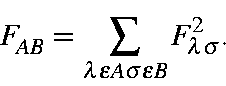
During the evaluation of 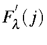, the quantity 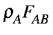 is computed. Only if it is above a preset limit are the terms involving atoms Aand B used.
As soon as
 is calculated, the magnitude of each atom's
contribution to
is calculated, the magnitude of each atom's
contribution to
 is determined, and stored:
is determined, and stored:
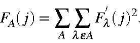
Together, these three modifications result in a large reduction in the time
necessary to compute the partial sum
 .
.
The virtual energy levels are calculated using
 :
:
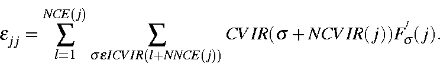
Now the calculation of the occupied-virtual matrix elements can be performed. The quantity to be calculated is
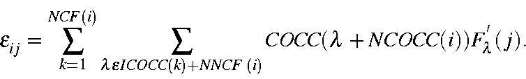
Because this is a single sum over atoms, not much time is saved by testing to see if any terms can be omitted. However, the test is a simple one, and it does result in a small increase in speed by evaluating the quantity 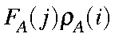, and comparing it to a preset limit. Since both FA(j) and 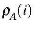 have already been calculated, this test is very rapid.
Calculation of the occupied-virtual matrix elements presents a new problem. There are a large number of these elements, many of which involve only atoms which are far from the LMO centers. To see why this is so, consider two LMOs which have exactly one atom in common. For this to happen, the atom in question must be very far from the centers of both LMOs. The energy terms arising from such an atom must, of necessity, be very small. In the interest of efficiency, all calculations involving such atoms should be ignored. Unfortunately, it is not possible to a priori determine which terms to include and which to leave out. Therefore, at the start of the SCF calculation, all terms must be evaluated. As soon as large changes in the LMOs have stopped, a list can be constructed of those occupied-virtual matrix elements which need to be considered for annihilation.